시작설치와 첫 요청 10:00~10:30
강사 화면을 보면서 한 단계씩 같이 합니다. 한 단계가 끝나면 손을 들어 알려 주세요.
OpenCode 설치 파일 받기
같이3분- OpenCode 2.0.30 설치 파일 받기 (Windows, 237MB)
- 받는 데 1~3분 걸립니다. 받는 동안 강사 설명을 듣습니다.
설치하기
같이3분- 내려받기 폴더의 opencode-desktop-win-x64.exe를 두 번 누릅니다.
- 「Windows의 PC 보호」 창이 뜨면 [추가 정보] → [실행]을 누릅니다.
- 설치 창 없이 1분쯤 뒤에 OpenCode 창이 열립니다.
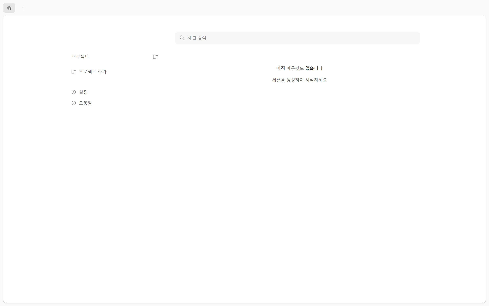
모양과 색은 사람마다 달라도 괜찮습니다.
실습 꾸러미 풀기
같이4분- 실습 꾸러미(거창실습.zip) 받기 이미 이 워크북을 꾸러미 안에서 보고 있다면 건너뜁니다.
- 거창실습.zip을 오른쪽 클릭 → [모두 압축 풀기] → 대상을 바탕 화면으로 정하고 풉니다.
- 바탕화면 거창실습 폴더의 워크북.html을 열어 둡니다. 오늘 하루 계속 씁니다.
모양과 색은 사람마다 달라도 괜찮습니다.
실습 폴더를 프로젝트로 열기
같이3분- OpenCode 왼쪽의 [프로젝트 추가]를 누릅니다.
- 바탕 화면 → 거창실습 → 실습1_문서서식 폴더를 고르고 [폴더 선택]을 누릅니다.
- [새 세션]을 누르면 가운데에 입력창이 나옵니다.
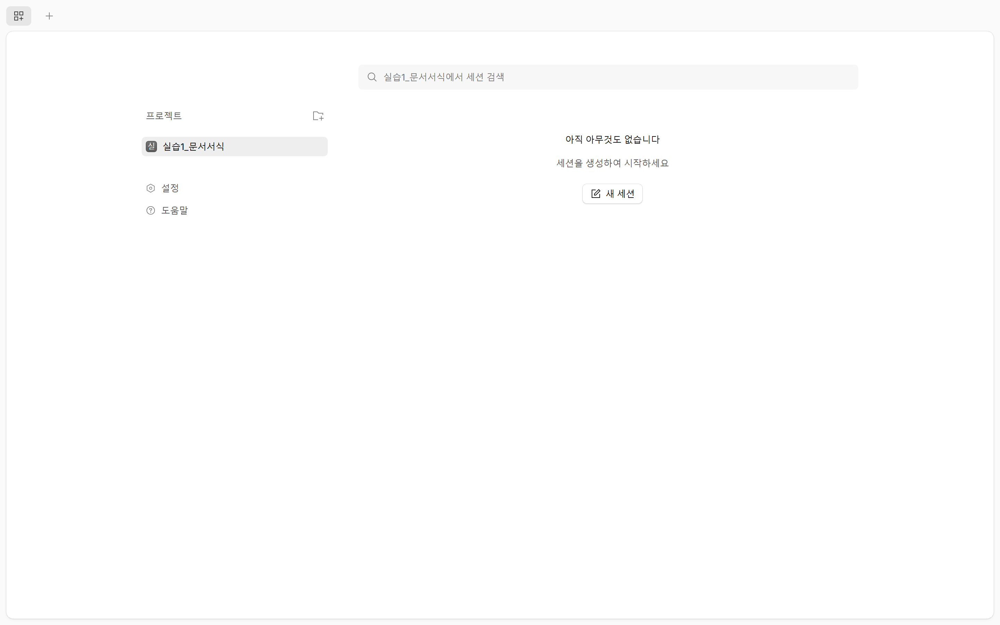
모양과 색은 사람마다 달라도 괜찮습니다.
모델을 DeepSeek V4.1 Flash Free로 바꾸기
같이2분- 입력창 아래의 모델 이름을 누릅니다. 처음에는 Nemotron 같은 다른 무료 모델이 골라져 있습니다.
- 목록에서 DeepSeek V4.1 Flash Free를 고릅니다.
- 목록에 없으면 「무료」 표시가 붙은 GLM-5.3-Flash Free를 고릅니다.
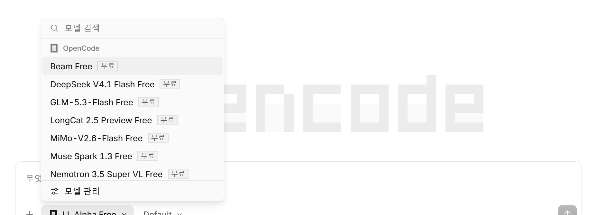
모양과 색은 사람마다 달라도 괜찮습니다.
첫 요청: 파일 하나 만들기
같이5분- 아래 지시문의 [복사]를 누릅니다.
- OpenCode 입력창에 붙여 넣고(Ctrl+V) Enter를 누릅니다.
- 답이 오면 실습1_문서서식 폴더의 첫화면.html을 두 번 눌러 엽니다.
안녕! 오늘 AI 실습을 시작할 거야. 첫화면.html 파일 하나를 만들어 줘. 가운데에 '거창군청 AI 바이브코딩 실습'과 오늘 날짜를 크게 넣고, 더블클릭하면 인터넷 없이 열리게 해 줘.
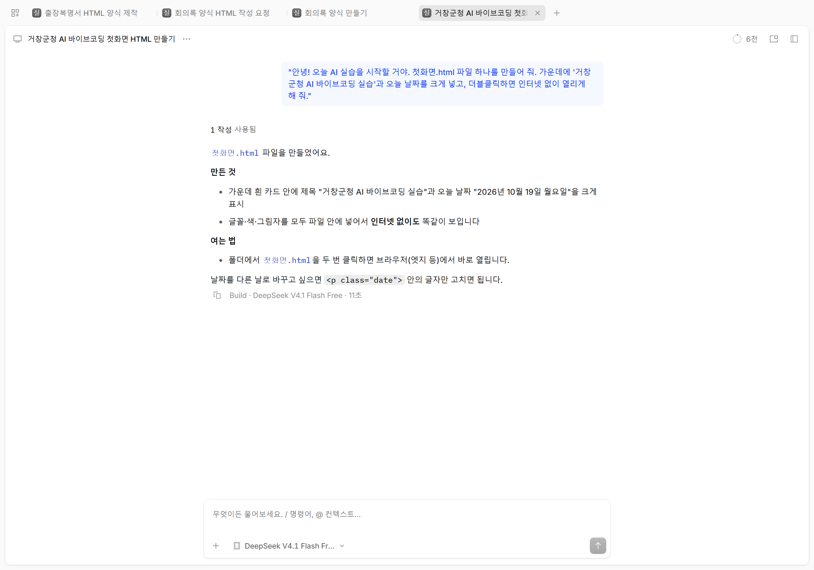
모양과 색은 사람마다 달라도 괜찮습니다.
막히면
- 1분이 지나도 답이 없어요 → 모델 이름을 눌러 다른 무료 모델로 바꾼 뒤 다시 보냅니다
- 파일이 안 생겨요 → 왼쪽 목록에서 실습1_문서서식이 골라져 있는지 확인합니다
1부ChatGPT와 다른 점, 안전하게 쓰는 법 10:30~11:00
ChatGPT는 답을 적어 주고
OpenCode는 내 PC의 작업 폴더에 파일을 직접 만들고 고칩니다.
요청 → 생성 → 확인 → 수정
작게 시키고, 직접 열어 확인하고, 고칠 점을 다시 말합니다. 처음 결과는 초안입니다.
지시문 네 칸
무엇을 · 무엇을 담아 · 어떻게 · 어떤 모양으로. 빠진 칸은 AI가 마음대로 정합니다.
정보보안: 오늘은 가상 자료만 씁니다
지시문, AI의 답, AI가 폴더에서 읽은 파일 내용이 미국·EU에 있는 모델 서버로 보내집니다. 보관·학습 조건은 모델마다 다릅니다. 오늘 쓰는 DeepSeek V4.1 Flash Free는 보관하지 않고 학습에 쓰지 않는다고 안내합니다. 대체 모델 GLM-5.3-Flash Free도 같은 조건입니다. 처음 골라져 있는 Nemotron은 개인정보·기밀을 넣지 말라는 시험용이고 사용 기록을 남겨 개선에 씁니다. 어느 모델이든 오늘은 가상 자료만 넣습니다.
넣어도 되는 것
- 오늘 실습 자료 (모두 가상)
- 서식의 칸 이름, 업무 항목 이름
- 공개된 법령·공고문 내용
- 지어낸 예시 값 (김OO, 010-0000-0000)
넣으면 안 되는 것
- 주민 실명·연락처·주민등록번호
- 민원 원문, 결재 문서, 내부 보고서
- 비공개 통계나 개인 단위 자료
- 비밀번호·인증서 같은 접속 정보
실습①반복해 쓰는 문서를 파일로 만들기 11:00~12:00 · 실습1_문서서식 폴더
한 문장으로 요청하면
시연5분- 강사 화면을 봅니다. 따라 하지 않아도 됩니다.
회의록 양식 만들어 줘.
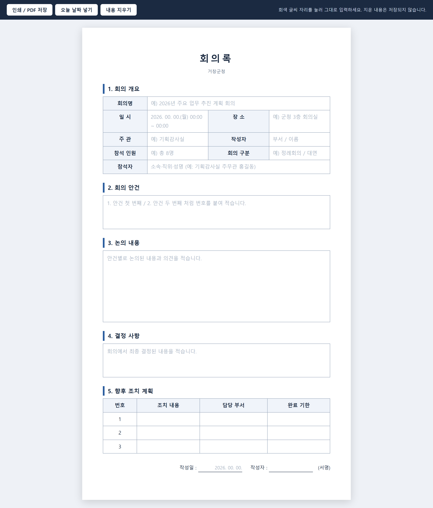
네 칸을 채워 다시 요청하기
같이13분- 입력창 위 [새 세션]을 눌러 새 대화를 엽니다.
- 지시문을 [복사]해 붙여 넣고 Enter.
- 1분쯤 뒤 실습1_문서서식 폴더의 회의록.html을 엽니다.
우리 부서에서 쓸 회의록 양식을 만들어 줘. 일시, 장소, 참석자, 안건, 논의 내용, 결정 사항, 후속 조치(담당자·기한) 칸을 넣어 줘. 칸마다 화면에서 바로 입력할 수 있게 하고, A4 한 장에 인쇄되게 해 줘. 파일 하나(회의록.html)로 만들고 더블클릭하면 인터넷 없이 열리게 해 줘.
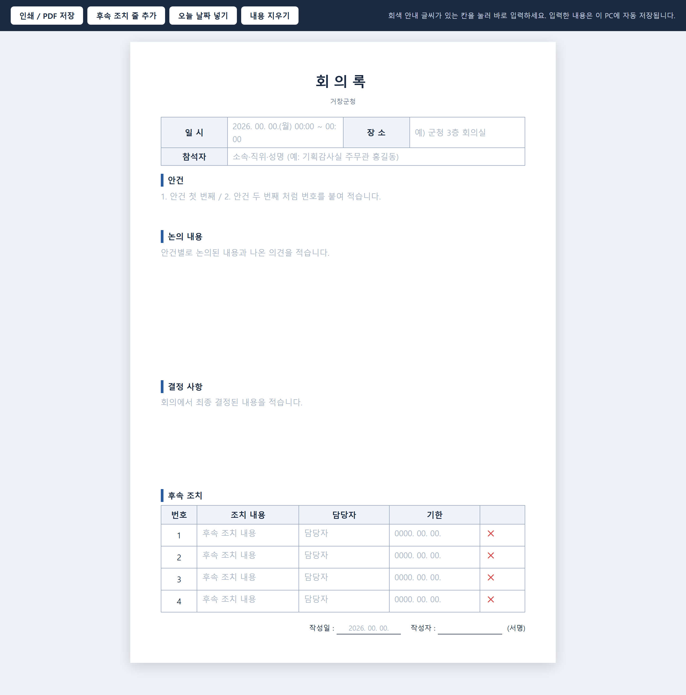
모양과 색은 사람마다 달라도 괜찮습니다.
막히면
- 파일이 메모장으로 열려요 → 파일을 오른쪽 클릭 → 연결 프로그램 → 크롬 또는 엣지
- 칸이 빠졌어요 → 「○○ 칸이 빠졌어. 넣어 줘」라고 같은 대화에서 말합니다
말로 고치기
같이12분- 같은 대화에서 이어서 보냅니다(새 세션을 열지 않습니다).
- 답이 오면 인터넷 창에서 F5를 눌러 새로고침합니다.
오른쪽 위에 결재란(담당, 팀장, 과장)을 넣어 줘. 참석자 칸은 여섯 명까지 쓸 수 있게 늘리고, 맨 아래에 [인쇄하기] 버튼을 넣어 줘. 버튼은 인쇄할 때는 보이지 않게 해 줘.
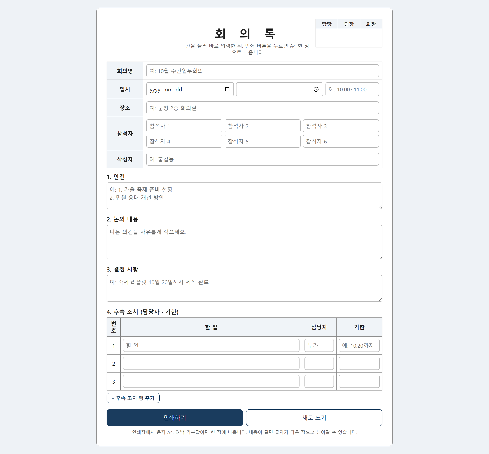
모양과 색은 사람마다 달라도 괜찮습니다.
PDF로 저장하기
- 회의록.html을 인터넷 창으로 엽니다.
- Ctrl+P → 대상에서 「PDF로 저장」
- [저장]을 누르고 파일 이름을 정합니다.
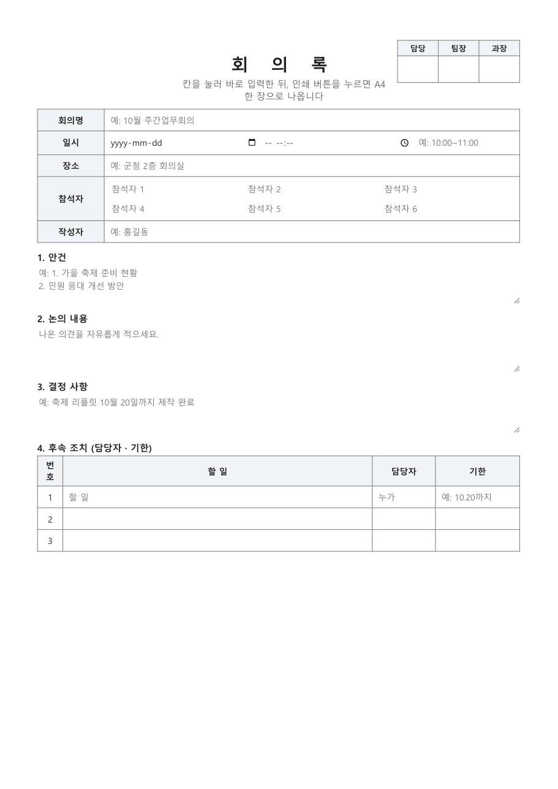
한글 문서로 옮기기
- 인터넷 창에서 표 전체를 끌어서 선택합니다.
- Ctrl+C로 복사합니다.
- 한글에서 Ctrl+V로 붙이고 칸 너비를 조정합니다.
OpenCode는 HWP 파일을 직접 만들지 못합니다. HTML이나 PDF로 만든 뒤 옮기는 편이 확실합니다.
내 서식 하나 만들기
혼자22분- [새 세션]을 열고 아래 세 가지 중 하나를 고릅니다. 칸 이름은 내 업무에 맞게 바꿔도 됩니다.
출장 복명서 양식을 만들어 줘. 출장자(소속·직급·성명), 출장 기간, 출장지, 출장 목적, 주요 내용, 결과 및 건의 사항 칸을 넣고, 칸마다 화면에서 바로 입력할 수 있게 해 줘. A4 한 장에 인쇄되게 하고 오른쪽 위에 결재란(담당, 팀장, 과장)을 넣어 줘. 파일 하나(출장복명서.html)로 만들고 더블클릭하면 인터넷 없이 열리게 해 줘.
시설 점검 일지 양식을 만들어 줘. 점검일, 시설명, 점검 항목(소방·전기·난방), 결과(양호·보수 필요·긴급 조치), 조치 사항, 점검자 칸을 넣고 칸마다 화면에서 바로 입력할 수 있게 하고, A4 한 장에 인쇄되게 해 줘. 파일 하나(시설점검일지양식.html)로 만들고 더블클릭하면 인터넷 없이 열리게 해 줘.
업무 협조 요청 양식을 만들어 줘. 수신, 발신, 제목, 요청 내용, 회신 기한, 담당자 연락처 칸을 넣고 칸마다 화면에서 바로 입력할 수 있게 하고, A4 한 장에 인쇄되게 해 줘. 파일 하나(업무협조요청.html)로 만들고 더블클릭하면 인터넷 없이 열리게 해 줘.
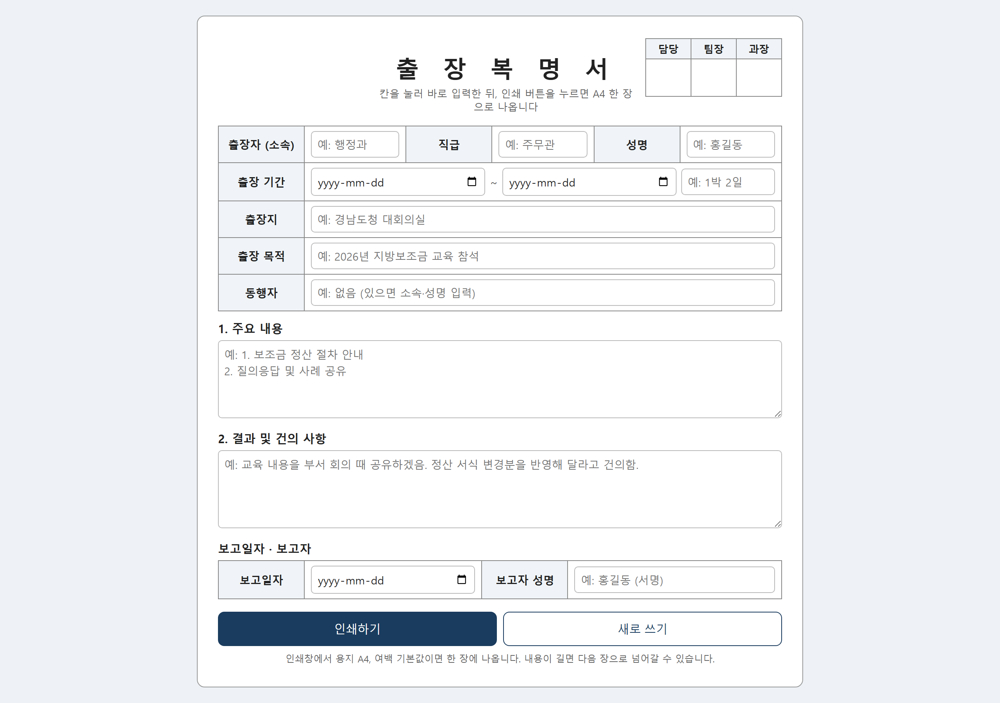
모양과 색은 사람마다 달라도 괜찮습니다.
실습②행정 데이터를 AI에게 맡기기 13:00~14:00 · 실습2_데이터 폴더
OpenCode에서 [프로젝트 추가] → 실습2_데이터 폴더를 새로 엽니다. 이 폴더에는 가상 자료 3종(민원 접수·처리 현황, 보조금 신청 현황, 시설 점검 일지)이 들어 있습니다. 엑셀로도 열어 볼 수 있습니다.
읍면별 건수를 표로 받기
같이10분- 지시문을 복사해 보냅니다.
- 답의 합계를 적어 둡니다. 다음 단계에서 확인합니다.
민원_접수처리현황.csv 파일을 읽고 읍면별 민원 건수를 많은 순서로 표로 정리해 줘. 맨 아래에 합계도 넣어 줘.
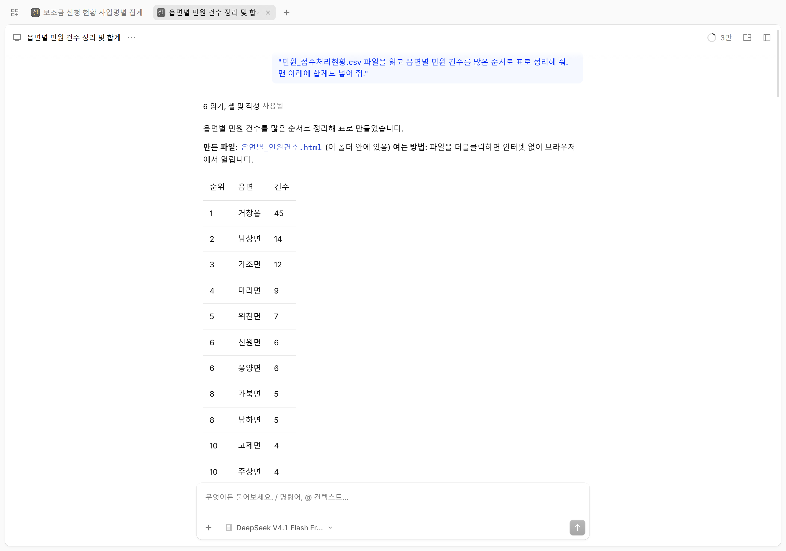
모양과 색은 사람마다 달라도 괜찮습니다.
기준일을 정해 기한 지난 건 찾기
같이7분- 같은 대화에서 이어서 보냅니다.
2026년 10월 31일 기준으로 처리기한이 지났는데 처리상태가 완료가 아닌 민원을 모두 찾아서 접수번호, 읍면, 처리기한, 처리상태를 표로 보여 줘. 모두 몇 건인지도 알려 줘.
모양과 색은 사람마다 달라도 괜찮습니다.
숫자 검증 3단계
같이12분- 세 지시문을 차례로 보냅니다: 원본 대조 → 되묻기 → 기록 남기기.
방금 읍면별 표의 합계가 파일의 실제 데이터 줄 수와 같은지 확인해 줘. 파일에서 제목 줄을 뺀 데이터는 모두 몇 줄이야?
지금까지 건수를 어떤 방법으로 셌는지, 파일을 몇 줄 읽었는지 쉬운 말로 설명해 줘.
지금까지 집계한 결과와 방법을 집계결과.html 파일로 정리해 줘. 기준일, 사용한 조건, 함정 줄을 어떻게 처리했는지도 적어 주고, 더블클릭하면 브라우저에서 열리게 해 줘.
모양과 색은 사람마다 달라도 괜찮습니다.
함정 찾기
같이8분- 이 자료에는 일부러 넣은 함정이 3개 있습니다. AI와 함께 찾아봅니다.
이 파일에 접수번호가 중복된 줄, 읍면 이름이 다르게 적힌 줄, 처리상태는 완료인데 처리일이 비어 있는 줄이 있는지 찾아서 접수번호와 함께 알려 줘.
정답 보기 (강사 안내 뒤에)
- 같은 접수번호가 두 번: 2026-0047
- 읍면 이름이 다르게 적힌 줄: 2026-0071 (「거창 읍」)
- 완료인데 처리일이 빈 줄: 2026-0096
그래서 파일은 121줄이지만 실제 민원은 120건입니다.
보조금 자료로 같은 질문 해 보기
혼자13분- [새 세션]을 열고 보냅니다. 검증 3단계도 스스로 해 봅니다.
보조금_신청현황.csv를 읽고 사업명별 신청 건수와, 심사상태가 승인인 신청의 지원결정금액 합계를 표로 정리해 줘. 금액은 천 단위 쉼표를 넣어 원 단위로 보여 줘.
실습③민원 접수 관리 도구 함께 만들기 14:00~16:30 · 실습3_업무도구 폴더
OpenCode에서 [프로젝트 추가] → 실습3_업무도구 폴더를 엽니다. 네 단계를 같은 대화에서 이어 갑니다. 단계마다 답이 오면 민원접수관리.html을 열거나 F5로 새로고침해 확인합니다.
1단계 · 뼈대 만들기
같이25분- 지시문을 복사해 보냅니다.
- 30초쯤 뒤 실습3_업무도구 폴더의 민원접수관리.html을 엽니다.
- 민원을 1건 등록하고 새로고침해 봅니다.
민원 접수 관리 프로그램을 만들어 줘. 파일 하나(민원접수관리.html)로 만들고 더블클릭하면 인터넷 없이 열리게 해 줘. 위쪽에는 입력칸(접수일, 민원인, 연락처, 읍면, 민원 내용)과 등록 버튼을 두고, 아래쪽에는 등록한 민원 목록 표가 나오게 해 줘. 새로고침해도 목록이 남아 있어야 해.
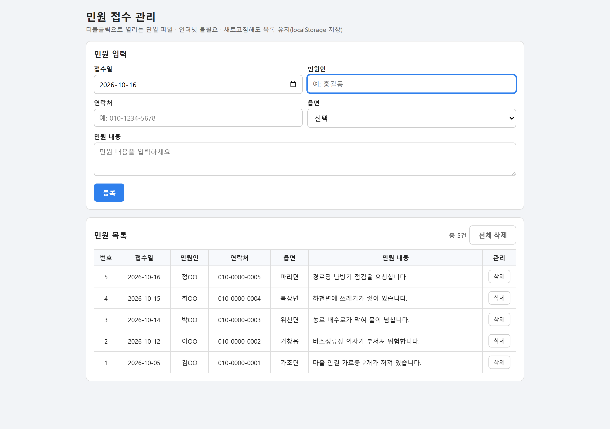
모양과 색은 사람마다 달라도 괜찮습니다.
막히면
- 등록을 눌러도 표에 안 나와요 → 「[등록] 버튼을 눌러도 표에 아무것도 안 나와. 원인을 찾아서 고쳐 줘.」
- 처음 열 때 이상한 숫자가 보여요 → 「파일을 처음 열면 '총 2건'이라고 나오는데 표에는 아무것도 없어. 원인을 찾아서 고쳐 줘.」
2단계 · 항목 정리
같이25분- 같은 대화에서 보냅니다.
- 답이 오면 F5로 새로고침합니다.
항목을 정리해 줘. 민원 유형 칸을 추가하고 선택지는 도로·교통, 환경·위생, 복지, 건축·주택, 농업, 기타로 해 줘. 읍면 칸은 직접 쓰지 말고 거창읍, 주상면, 웅양면, 고제면, 북상면, 위천면, 마리면, 남상면, 남하면, 신원면, 가조면, 가북면 중에서 고르게 해 줘. 처리 기한 칸은 접수일로부터 7일 뒤가 자동으로 들어가게 하고, 처리 상태(접수, 처리중, 완료) 칸을 넣어서 목록에서 상태를 바로 바꿀 수 있게 해 줘.
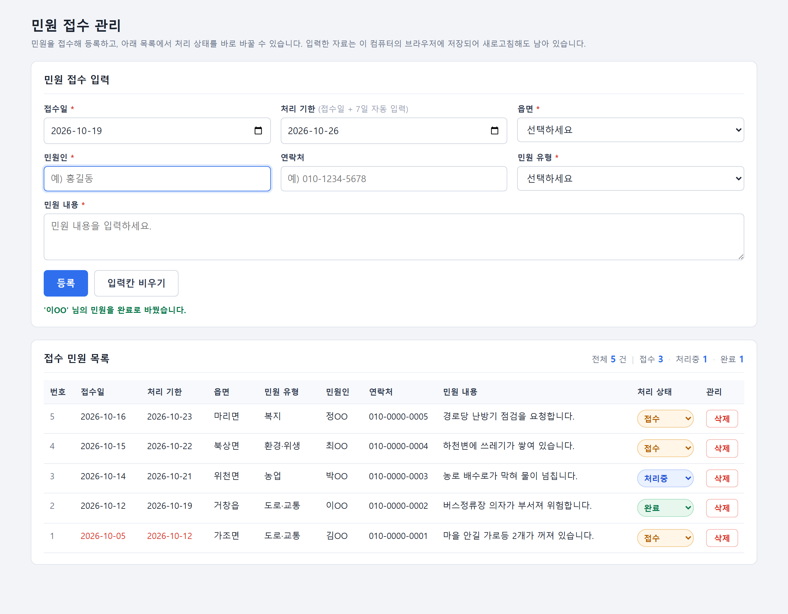
모양과 색은 사람마다 달라도 괜찮습니다.
막히면
- 처리 기한이 안 바뀌어요 → 「접수일을 바꾸면 처리 기한도 바로 바뀌게 해 줘」
늦었으면 완성본/실습3_1단계 폴더의 민원접수관리.html을 실습3_업무도구 폴더로 끌어다 놓고(덮어쓰기) 이 단계 지시문을 보냅니다.
3단계 · 검색과 정렬
같이30분- 같은 대화에서 보냅니다.
- 새로고침한 뒤 이름으로 검색하고, 접수일 제목을 눌러 봅니다.
목록 위에 검색창을 넣어서 민원인이나 내용으로 찾을 수 있게 해 줘. 읍면과 처리 상태로 골라 보는 칸도 넣어 줘. 표의 접수일 제목을 누르면 날짜 순으로 정렬되게 해 줘. 처리 기한이 지났는데 완료가 아닌 민원은 빨간색으로 표시해 줘.
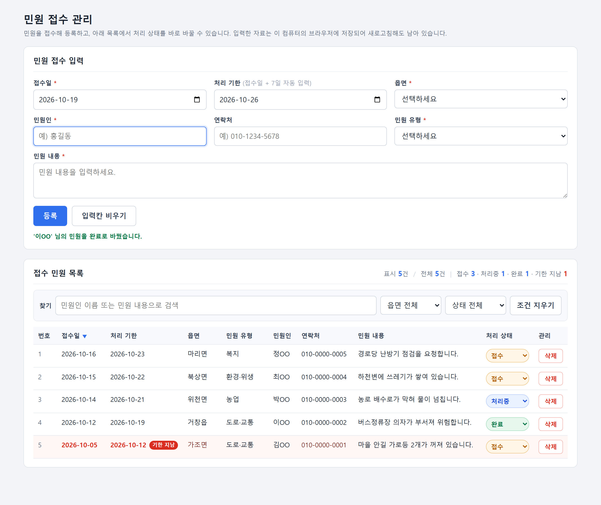
모양과 색은 사람마다 달라도 괜찮습니다.
늦었으면 완성본/실습3_2단계 폴더의 민원접수관리.html을 실습3_업무도구 폴더로 끌어다 놓고(덮어쓰기) 이 단계 지시문을 보냅니다.
시키지 않은 기능 확인하기
같이5분- AI가 시키지 않은 기능을 넣었는지 물어봅니다. 파일은 바뀌지 않습니다.
지금 민원접수관리.html에 내가 요청하지 않았는데 들어간 기능이 있으면 알려 줘. 지우지는 말고 목록만 보여 줘.
4단계 · 엑셀로 내보내기 (선택)
선택25분 (선택)- 빨리 끝난 사람만 합니다.
- [CSV 내려받기]를 눌러 받은 파일을 엑셀로 열어 봅니다.
지금 보이는 목록을 엑셀에서 열 수 있는 CSV 파일로 내려받는 버튼을 만들어 줘. 엑셀에서 열었을 때 한글이 깨지지 않아야 해.
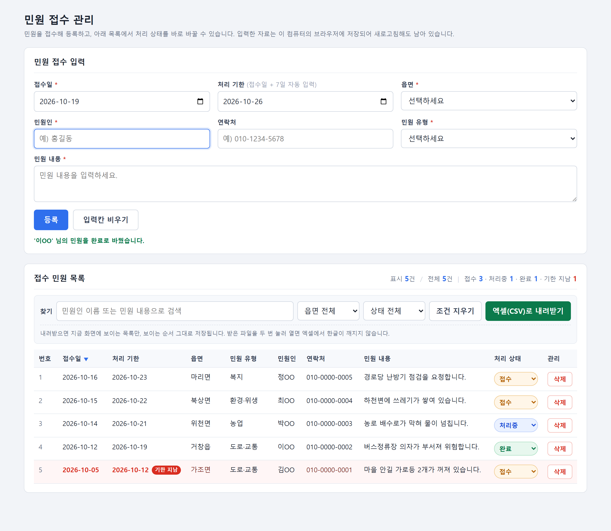
모양과 색은 사람마다 달라도 괜찮습니다.
늦었으면 완성본/실습3_3단계 폴더의 민원접수관리.html을 실습3_업무도구 폴더로 끌어다 놓고(덮어쓰기) 이 단계 지시문을 보냅니다.
실습④내 업무 도구로 바꾸기 16:30~17:30 · 실습3_업무도구 폴더, 새 대화
입력창 위 [새 세션]을 엽니다. 민원접수관리.html을 바탕으로 새 파일을 만들게 합니다. 항목 이름까지만 내 업무로 바꾸고, 실제 개인정보는 넣지 않습니다.
○○.html을 바탕으로 ○○ 도구를 새 파일(○○.html)로 만들어 줘. 원본 파일은 그대로 둬. 입력 항목은 ○○, ○○, ○○로 바꾸고, ○○는 ○○, ○○, ○○ 중에서 고르게 해 줘. 검색·정렬·CSV 내려받기 기능은 그대로 살려 줘.
예시 ① 보조금 신청 관리로 바꾸기
시연5분- 강사 시연을 봅니다. 그대로 따라 해도 됩니다.
민원접수관리.html을 바탕으로 보조금 신청 관리 도구를 새 파일(보조금신청관리.html)로 만들어 줘. 원본 파일은 그대로 둬. 입력 항목은 신청일, 신청인, 읍면, 사업명, 신청금액, 심사상태로 바꾸고, 사업명은 소규모 주택 수리 지원, 농기계 구입 지원, 경로당 운영 지원, 청년 창업 지원, 마을 공동체 활동 지원, 친환경 농자재 지원 중에서, 심사상태는 접수, 심사중, 승인, 반려 중에서 고르게 해 줘. 목록 위에 승인된 신청금액 합계를 보여 주고, 검색·정렬·CSV 내려받기 기능은 그대로 살려 줘.
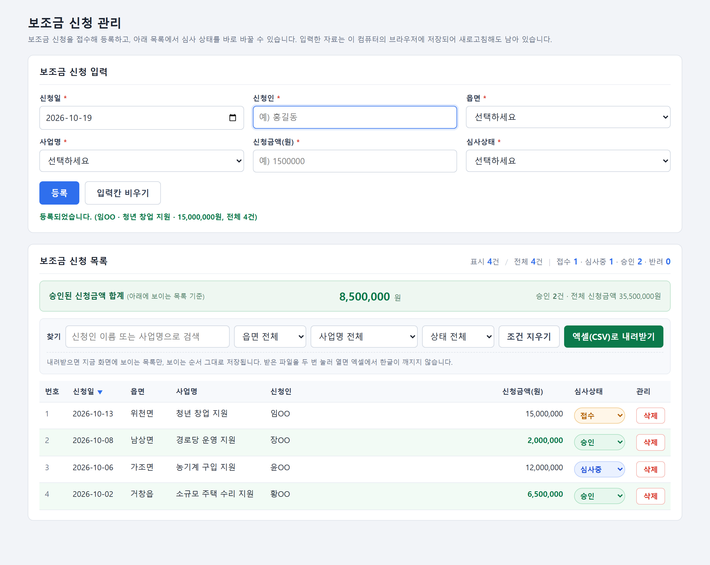
예시 ② 시설 점검 일지로 바꾸기
시연3분- 결과에 따라 다음 점검일이 바뀌는 규칙을 말로 정해 줍니다.
민원접수관리.html을 바탕으로 시설 점검 일지 도구를 새 파일(시설점검일지.html)로 만들어 줘. 원본 파일은 그대로 둬. 입력 항목은 점검일, 읍면, 시설명, 점검항목, 결과, 조치사항, 담당자로 바꾸고, 결과는 양호, 보수 필요, 긴급 조치 중에서 고르게 해 줘. 다음 점검일은 결과에 따라 양호는 90일, 보수 필요는 14일, 긴급 조치는 3일 뒤로 자동으로 채워 주고, 결과가 긴급 조치인 줄은 빨간색으로 표시해 줘. 검색·정렬·CSV 내려받기 기능은 그대로 살려 줘.
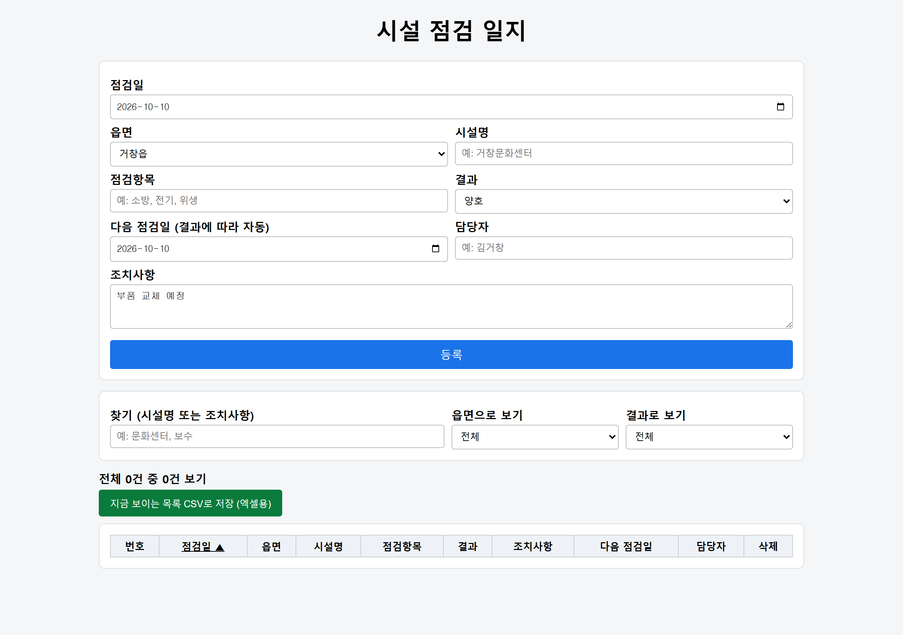
내 업무로 바꾸기
혼자45분- 「바꿔 줘」 틀을 복사해 ○○를 내 업무 항목으로 채워 보냅니다.
- 새 파일을 열어 확인합니다.
바꿔 볼 만한 업무
- 교육·행사 신청 접수: 신청일, 이름, 소속, 참석 여부
- 물품 대여 관리: 대여일, 물품, 빌린 부서, 반납 예정일, 반납 여부
- 차량 운행 일지: 운행일, 차량, 운전자, 목적지, 운행 거리
- 현장 점검 기록: 점검일, 장소, 지적 사항, 조치 기한, 조치 여부
모양과 색은 사람마다 달라도 괜찮습니다.
마무리결과 가져가기와 정리 17:30~18:00
결과물 가져가기
같이- 바탕화면 거창실습 폴더를 오른쪽 클릭 → [ZIP 파일로 압축]
- 인터넷 창에서 Ctrl+Shift+N(엣지는 Ctrl+Shift+P)로 InPrivate 창을 엽니다.
- 새 창에서 본인 메일에 로그인 → 압축 파일 첨부 → 보내기
- 보낸 것을 확인하고 로그아웃 → 창 닫기
InPrivate 창은 닫으면 로그인 기록이 남지 않습니다. 여러 사람이 쓰는 교육장 PC라서 이 창을 씁니다.
정리하기
같이- OpenCode 창을 닫습니다.
- 거창실습 폴더의 정리하기.bat을 두 번 누릅니다.
- 「메일로 보냈나요?」에 Y를 입력합니다.
- 「정리 끝」 화면을 강사에게 보여 줍니다.
사무실에서 이어 쓰기
- 인터넷망 PC에서 이 페이지의 설치 파일로 같은 방법으로 설치합니다. 업무망 PC에는 설치하지 않습니다.
- 입력한 내용은 국외 서버로 갑니다. 모델을 바꾸면 보관·학습 조건도 달라지니 가상 자료나 공개 자료만 넣습니다.
- 무료 모델 목록은 자주 바뀝니다. 「무료」 표시가 붙은 모델을 고릅니다. 유료 도구(Claude Code, Codex, Antigravity 등)를 구독 중이면 같은 지시문을 그대로 써도 됩니다.
도움막혔을 때
| 이럴 때 | 이렇게 하세요 |
|---|---|
| 1분이 지나도 답이 없어요 | 모델 이름을 눌러 다른 무료 모델로 바꾸고 다시 보냅니다 |
| 영어 오류 문구(Transport 등)가 뜨고 멈췄어요 | 같은 지시문을 한 번 더 보냅니다. 또 뜨면 다른 무료 모델로 바꿉니다 |
| 「Rate limit exceeded」나 「Free usage exceeded」가 떠요 | 무료 사용량이 인터넷 주소 단위로 막힌 것입니다. 다른 무료 모델도 같이 막히므로 바꾸지 말고 강사에게 알립니다. 강사 안내에 따라 휴대폰 핫스팟으로 바꾸거나, 완성본 폴더의 파일로 다음 단계에 합류합니다 |
| 버튼을 눌러도 반응이 없어요 | 증상을 그대로 보냅니다: 「등록을 눌러도 표에 안 나와. 고쳐 줘」 |
| 고쳤다는데 화면이 그대로예요 | 인터넷 창에서 F5로 새로고침합니다 |
| 파일을 못 찾겠어요 | 바탕화면 거창실습 폴더에서 해당 실습 폴더를 엽니다 |
| 파일이 메모장으로 열려요 | 파일 오른쪽 클릭 → 연결 프로그램 → 크롬 또는 엣지 |
| 5분 넘게 막혔어요 | 빨간 메모지를 붙이고, 완성본 폴더의 파일로 다음 단계에 합류합니다 |
고쳐 달라고 말하는 틀
[무엇을 했더니] ○○을 눌렀더니 [어떻게 됐어] ○○이 나와. [원래 바란 것] ○○이 되어야 해. 원인을 찾아서 고쳐 줘.
[등록] 버튼을 눌러도 표에 아무것도 안 나와. 원인을 찾아서 고쳐 줘.
파일을 처음 열면 '총 2건'이라고 나오는데 표에는 아무것도 없어. 원인을 찾아서 고쳐 줘.
화면 오른쪽이 잘려서 [삭제] 버튼이 안 보여. 표가 화면 안에 들어오게 고쳐 줘.
브라우저에서 F5를 눌러 새로고침한 뒤 다시 확인한다. 그래도 같으면: 고쳤다고 했는데 화면이 그대로야. 파일을 다시 확인해 줘.
모음지시문 모음
오늘 쓴 지시문을 순서대로 모았습니다. 모두 교육 전에 무료 모델로 실제 실행해 확인했습니다.
[무엇을] ○○ 양식(도구)을 만들어 줘. [무엇을 담아] ○○, ○○, ○○ 칸을 넣어 줘. [어떻게] ○○하게 해 줘. [어떤 모양으로] 파일 하나(○○.html)로 만들고 더블클릭하면 인터넷 없이 열리게 해 줘.
안녕! 오늘 AI 실습을 시작할 거야. 첫화면.html 파일 하나를 만들어 줘. 가운데에 '거창군청 AI 바이브코딩 실습'과 오늘 날짜를 크게 넣고, 더블클릭하면 인터넷 없이 열리게 해 줘.
회의록 양식 만들어 줘.
우리 부서에서 쓸 회의록 양식을 만들어 줘. 일시, 장소, 참석자, 안건, 논의 내용, 결정 사항, 후속 조치(담당자·기한) 칸을 넣어 줘. 칸마다 화면에서 바로 입력할 수 있게 하고, A4 한 장에 인쇄되게 해 줘. 파일 하나(회의록.html)로 만들고 더블클릭하면 인터넷 없이 열리게 해 줘.
오른쪽 위에 결재란(담당, 팀장, 과장)을 넣어 줘. 참석자 칸은 여섯 명까지 쓸 수 있게 늘리고, 맨 아래에 [인쇄하기] 버튼을 넣어 줘. 버튼은 인쇄할 때는 보이지 않게 해 줘.
출장 복명서 양식을 만들어 줘. 출장자(소속·직급·성명), 출장 기간, 출장지, 출장 목적, 주요 내용, 결과 및 건의 사항 칸을 넣고, 칸마다 화면에서 바로 입력할 수 있게 해 줘. A4 한 장에 인쇄되게 하고 오른쪽 위에 결재란(담당, 팀장, 과장)을 넣어 줘. 파일 하나(출장복명서.html)로 만들고 더블클릭하면 인터넷 없이 열리게 해 줘.
민원_접수처리현황.csv 파일을 읽고 읍면별 민원 건수를 많은 순서로 표로 정리해 줘. 맨 아래에 합계도 넣어 줘.
2026년 10월 31일 기준으로 처리기한이 지났는데 처리상태가 완료가 아닌 민원을 모두 찾아서 접수번호, 읍면, 처리기한, 처리상태를 표로 보여 줘. 모두 몇 건인지도 알려 줘.
방금 읍면별 표의 합계가 파일의 실제 데이터 줄 수와 같은지 확인해 줘. 파일에서 제목 줄을 뺀 데이터는 모두 몇 줄이야?
지금까지 건수를 어떤 방법으로 셌는지, 파일을 몇 줄 읽었는지 쉬운 말로 설명해 줘.
이 파일에 접수번호가 중복된 줄, 읍면 이름이 다르게 적힌 줄, 처리상태는 완료인데 처리일이 비어 있는 줄이 있는지 찾아서 접수번호와 함께 알려 줘.
지금까지 집계한 결과와 방법을 집계결과.html 파일로 정리해 줘. 기준일, 사용한 조건, 함정 줄을 어떻게 처리했는지도 적어 주고, 더블클릭하면 브라우저에서 열리게 해 줘.
보조금_신청현황.csv를 읽고 사업명별 신청 건수와, 심사상태가 승인인 신청의 지원결정금액 합계를 표로 정리해 줘. 금액은 천 단위 쉼표를 넣어 원 단위로 보여 줘.
민원 접수 관리 프로그램을 만들어 줘. 파일 하나(민원접수관리.html)로 만들고 더블클릭하면 인터넷 없이 열리게 해 줘. 위쪽에는 입력칸(접수일, 민원인, 연락처, 읍면, 민원 내용)과 등록 버튼을 두고, 아래쪽에는 등록한 민원 목록 표가 나오게 해 줘. 새로고침해도 목록이 남아 있어야 해.
항목을 정리해 줘. 민원 유형 칸을 추가하고 선택지는 도로·교통, 환경·위생, 복지, 건축·주택, 농업, 기타로 해 줘. 읍면 칸은 직접 쓰지 말고 거창읍, 주상면, 웅양면, 고제면, 북상면, 위천면, 마리면, 남상면, 남하면, 신원면, 가조면, 가북면 중에서 고르게 해 줘. 처리 기한 칸은 접수일로부터 7일 뒤가 자동으로 들어가게 하고, 처리 상태(접수, 처리중, 완료) 칸을 넣어서 목록에서 상태를 바로 바꿀 수 있게 해 줘.
목록 위에 검색창을 넣어서 민원인이나 내용으로 찾을 수 있게 해 줘. 읍면과 처리 상태로 골라 보는 칸도 넣어 줘. 표의 접수일 제목을 누르면 날짜 순으로 정렬되게 해 줘. 처리 기한이 지났는데 완료가 아닌 민원은 빨간색으로 표시해 줘.
지금 보이는 목록을 엑셀에서 열 수 있는 CSV 파일로 내려받는 버튼을 만들어 줘. 엑셀에서 열었을 때 한글이 깨지지 않아야 해.
지금 민원접수관리.html에 내가 요청하지 않았는데 들어간 기능이 있으면 알려 줘. 지우지는 말고 목록만 보여 줘.
민원접수관리.html을 바탕으로 보조금 신청 관리 도구를 새 파일(보조금신청관리.html)로 만들어 줘. 원본 파일은 그대로 둬. 입력 항목은 신청일, 신청인, 읍면, 사업명, 신청금액, 심사상태로 바꾸고, 사업명은 소규모 주택 수리 지원, 농기계 구입 지원, 경로당 운영 지원, 청년 창업 지원, 마을 공동체 활동 지원, 친환경 농자재 지원 중에서, 심사상태는 접수, 심사중, 승인, 반려 중에서 고르게 해 줘. 목록 위에 승인된 신청금액 합계를 보여 주고, 검색·정렬·CSV 내려받기 기능은 그대로 살려 줘.
민원접수관리.html을 바탕으로 시설 점검 일지 도구를 새 파일(시설점검일지.html)로 만들어 줘. 원본 파일은 그대로 둬. 입력 항목은 점검일, 읍면, 시설명, 점검항목, 결과, 조치사항, 담당자로 바꾸고, 결과는 양호, 보수 필요, 긴급 조치 중에서 고르게 해 줘. 다음 점검일은 결과에 따라 양호는 90일, 보수 필요는 14일, 긴급 조치는 3일 뒤로 자동으로 채워 주고, 결과가 긴급 조치인 줄은 빨간색으로 표시해 줘. 검색·정렬·CSV 내려받기 기능은 그대로 살려 줘.